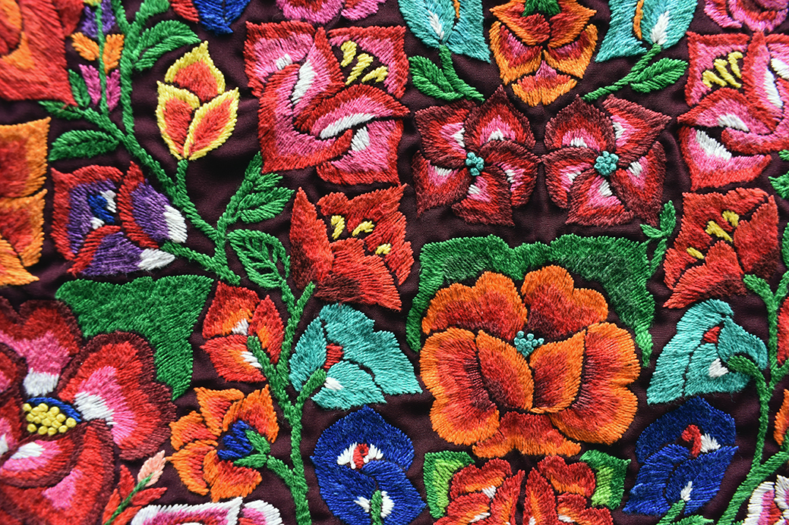

El origen zapoteca: donde nació el bordado en el Istmo
La historia del bordado en Juchitán de Zaragoza se remonta a siglos antes de la colonización española, entretejida con la civilización zapoteca que floreció en el Istmo de Tehuantepec. Los primeros vestigios de textiles decorados hallados en la región revelan que las mujeres zapotecas ya dominaban el arte de plasmar sobre la tela los símbolos sagrados de su cosmovisión: deidades del agua, el maíz, los animales del monte y los ciclos del sol.
El telar de cintura fue la herramienta original con la que las artesanas del Istmo tejían huipiles, enaguas y fajas decoradas con motivos geométricos de alto significado ritual. Cada pieza era única, hecha a mano, y funcionaba como un registro visual de la identidad familiar, el rango social y la pertenencia a una comunidad específica dentro de la vasta región istmeña.
"En Juchitán, bordar no es un oficio: es un idioma antiguo que las manos hablan cuando las palabras no alcanzan."
La influencia colonial y el nacimiento del bordado istmeño moderno
Con la llegada de los españoles en el siglo XVI, el bordado en el Istmo vivió una transformación profunda. Las técnicas europeas — el punto de satín, el bordado en cadeneta, el uso de hilo de seda y terciopelo — se fusionaron con los patrones y colores de la tradición zapoteca. El resultado fue un estilo completamente nuevo: el bordado istmeño, que hoy reconocemos en las blusas y huipiles de Juchitán.
La Iglesia Católica jugó un papel clave al introducir nuevos motivos florales de influencia mediterránea, que las bordadoras juchitecas adoptaron rápidamente y resignificaron con su propia paleta cromática: el rojo encendido del cempasúchil, el amarillo de la flor de mayo, el verde profundo de la selva istmeña.
El siglo XIX: el bordado como símbolo de resistencia
Durante las guerras de Reforma e Intervención Francesa, Juchitán de Zaragoza se convirtió en un bastión de resistencia. Las mujeres zapotecas, conocidas como las "Madres del Istmo", bordaron estandartes, fajas y prendas que los soldados juchitecos llevaban consigo como amuletos de protección y señas de identidad. El bordado dejó de ser solo decoración para convertirse en un acto político.
Este período consolidó la relación entre el bordado juchiteco y la identidad colectiva de un pueblo que nunca se dejó someter del todo. Hasta el día de hoy, los motivos de esa época — la paloma de la paz, la flor de loto, el quetzal — siguen presentes en las prendas bordadas de la región.
Elementos característicos del bordado de Juchitán
El bordado istmeño tiene señas de identidad que lo distinguen a primera vista de cualquier otro estilo textil en México:
- Motivos florales: Flores de hibisco, rosas, bugambilias y cempasúchil son los protagonistas indiscutibles, generalmente en colores vivos sobre fondos oscuros.
- Fauna del Istmo: Iguanas, pájaros tropicales, mariposas y peces reflejan la biodiversidad de la región y ocupan un lugar frecuente en los diseños.
- Punto de satín y cadeneta: Las dos técnicas más usadas, que crean efectos de volumen y brillo característicos en las blusas y huipiles.
- Colores saturados y contrastantes: La paleta típica incluye rojos, magentas, amarillos, verdes jade y azules reales, siempre en combinaciones audaces.
- Fondo en terciopelo o manta: El terciopelo negro o azul marino es el soporte favorito para resaltar el brillo de los hilos de seda y rayón.
- Simetría y composición centralizada: Los diseños suelen organizarse en torno a un motivo central que irradia hacia los bordes de la prenda.
"Cada flor bordada sobre el terciopelo de Juchitán lleva el nombre de la mujer que la hizo, aunque nadie lo haya escrito."
El traje de tehuana: la embajadora global del bordado juchiteco
No hay símbolo más icónico del bordado de Juchitán que el traje de tehuana. Compuesto de blusa bordada, enagua de holán y tocado de flores, este atuendo cruzó las fronteras de la región gracias, en gran parte, a la pintora Frida Kahlo, quien lo adoptó como emblema de feminismo y orgullo latinoamericano en las décadas de 1930 y 1940.
Hoy, el traje istmeño es festejado en museos de Nueva York, París y Tokio, y figuras de la moda internacional como Jean Paul Gaultier y Alexander McQueen han reconocido su influencia en sus colecciones. Pero su hogar sigue siendo el Istmo, y su guardiana, la mujer juchiteca que lo porta en las velas, mayordomías y fiestas patronales.
El siglo XX y la transformación del bordado artesanal
Durante el siglo XX, el bordado en Juchitán vivió dos procesos paralelos y, en apariencia, contradictorios: una revaloración cultural impulsada por artistas e intelectuales mexicanos, y una presión económica que comenzó a desplazar la producción artesanal hacia modelos semiindustriales.
Las cooperativas de bordadoras surgieron como respuesta colectiva, permitiendo a las artesanas organizarse, fijar precios justos y acceder a mercados nacionales e internacionales. El Museo Textil de Juchitán y diversas exposiciones itinerantes pusieron en el mapa global la riqueza del textil istmeño como patrimonio vivo.
El bordado digital en Juchitán: tradición y tecnología de la mano
En el siglo XXI, el bordado en Juchitán de Zaragoza ha dado un nuevo paso evolutivo: la incorporación del bordado digital. Empresas locales como Bortex Bordados Juchitán han integrado máquinas de bordado de alta precisión con el conocimiento artesanal heredado de generaciones, logrando reproducir los intrincados motivos del bordado istmeño con fidelidad cromática y volumétrica.
Esto no significa el fin del bordado a mano — que permanece insustituible como expresión artística y ritual — sino la apertura de un nuevo capítulo: aquel en el que la tradición bordada de Juchitán puede vestir uniformes corporativos, gorras, camisetas y todo tipo de prendas sin perder su identidad. El proceso de ponchado (digitalización del diseño) permite capturar la esencia de cada motivo floral o geométrico y reproducirlo con exactitud en series medianas o grandes.
Aplicaciones actuales del bordado estilo Juchitán
El legado bordado de Juchitán ha encontrado nuevos espacios en el México y el mundo contemporáneos:
- Colecciones de moda de diseñadores oaxaqueños y nacionales con motivos istmeños.
- Uniformes para restaurantes, hoteles y negocios que celebran la identidad cultural del Istmo.
- Souvenirs y artesanías bordadas con motivos tradicionales para el turismo cultural.
- Gorras, playeras y accesorios personalizados con diseños de inspiración zapoteca.
- Prendas de gala para bodas, velas istmeñas, quinceañeras y eventos patronales.
- Colaboraciones con museos y proyectos de difusión del patrimonio cultural inmaterial.
¿Por qué el bordado de Juchitán sigue vivo hoy?
La respuesta es tan sencilla como profunda: porque en Juchitán, bordar sigue siendo un acto de amor y pertenencia. Las madres enseñan a sus hijas. Las abuelas preservan los patrones. Los jóvenes diseñadores los reinterpretan. Y empresas comprometidas con la región, como Bortex, trabajan para que esa historia se cuente en cada puntada, ya sea de aguja o de máquina.
El bordado de Juchitán es Patrimonio Cultural Inmaterial de México y un legado vivo que sigue creciendo, adaptándose y sorprendiendo a quien tiene la fortuna de conocerlo de cerca.
¿Quieres llevar el arte bordado de Juchitán a tu proyecto?
Solicitar cotización gratis